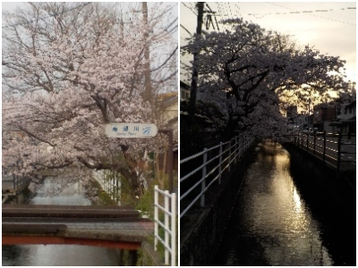
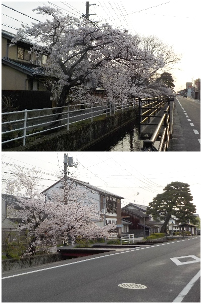

島根県出雲市
更新日 : 2026/04/06

車で通過したらキレイだったので、再度歩いて見ることにしました。商工会議所や図書館に近くです。
桜が川に覆いかぶさっていて、近くまで花が迫って来る感じがしました。
通常桜は上に大きくしますが、川だと横に広げれていいですね。

他に歩いている人はいなかったので、一人でのんびり花見をしました。
桜っていろんな場所に植わっているから、ちょっとしたところは見なかったりしますよね。あちこち小さいところを見て歩くのもいいかなと思いました。
【おいしいものを食べよう。】【たくさん寝よう。】
【ソロ活をしよう!】【季節感のあることをしよう。】【動画視聴はほどほどに。】【当サイトの全てのコンテンツは無断転載禁止です。】